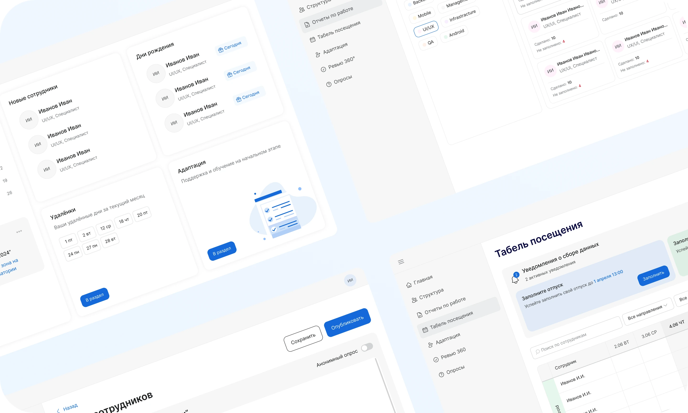

Октябрь 2026
Живой подарок
Цифровой подарок: сначала человек встречает цветок, и только потом видит сертификат. Даритель собирает его за минуту. Получатель открывает касанием купола.
B2CWebПрототип
Задача и итог
Проблема
Сертификат считывают по сумме. Пока номинал стоит на первом экране, цветок остаётся упаковкой, и подарок ощущается как перевод.
Задача
Поставить встречу с цветком раньше денег. Даритель не выбирает готовую картинку: он задаёт, кому дарит, и три черты. Получатель решает, забрать сертификат сразу или оставить цветок себе.
Моя роль
Собрала оба сценария в живые прототипы, которые открываются с телефона и которые можно показать бренду: путь дарителя из пяти шагов и путь получателя с открытием, сертификатом и уходом за цветком.
Результаты
- Сумма не появляется раньше цветка. Дарителю прямо сказано, что получатель узнает её только после раскрытия, а у получателя сертификат лежит внутри.
- Открытие — жест, а не ролик на фоне. Купол остаётся частью ритуала: к нему прикасаются и удерживают, пока роза расцветает.
- Выбор внешности убран. Остались тип отношений и три черты: две про форму бутона и одна про лепестки. Цветок получается личным и при этом непредсказуемым.
- После открытия есть второй шаг. Сертификат можно забрать сразу или оставить цветок: сегодня короткий тест, каждый день полив одного гена, через год — секретный ген у тех, кто сохранил его живым.
* Это прототипы для показа сценария, не запущенный продукт. Цифр по конверсии нет, и я их не подставляю.
Как шла работа
Прототипы выше живые: их можно пролистать прямо здесь.
Этапы
- 1Где всплывает сумма
- 2Чем открывают подарок
- 3Что выбирает даритель
- 4Зачем возвращаться
Где всплывает сумма
Если номинал виден сразу, цветок ничего не меняет: человек уже понял, сколько ему подарили. Поэтому сумму убрала с порога. На шаге дарителя написано прямо: получатель узнает её только после того, как цветок раскроется. У получателя сертификат открывается следом за цветком, а не вместо него.
Чем открывают подарок
Пассивная анимация не оставляет человеку действия: ролик прошёл, и подарок как будто открылся сам. Купол оставила частью жеста. Получатель касается его и удерживает, пока роза расцветает. Пока палец на стекле, подарок ещё не «вручён».
Что выбирает даритель
Если собирать цветок как конструктор, сюрприза не остаётся: даритель уже видел результат. Внешность он не выбирает. Путь короткий, на одну минуту: бренд сертификата, номинал, кому подарок — романтический, дружеский или благодарственный — и три черты. Две задают форму бутона, одна — форму лепестков. Черты становятся характером цветка, а не готовой картинкой.
Зачем возвращаться
Сертификат можно забрать в ту же минуту, и тогда история кончается. Рядом оставила второй путь: оставить цветок. Сегодня — тест на две минуты, и в цветке появляется часть самого человека. Каждый день — полив, и крепнет один выбранный ген. Через год — секретный ген, только у тех, кто сохранил цветок живым.
